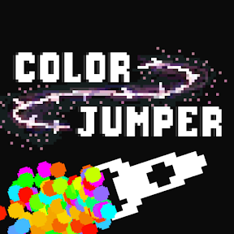

The Creation of Color Jumper
10-7-25

Color Jumper is a mobile game that my friend and I are making for iOS
and Android. The idea for the game started when my friend made a
prototype of the game three years ago.
He shared it with me, and I thought it was a genuinely fun game.
After forgetting about it for a year, we decided to go all-in on the
game and publish it for real!